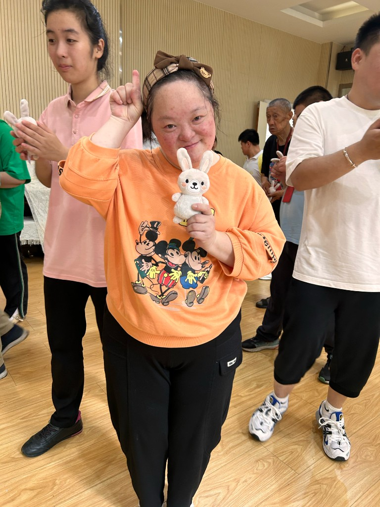
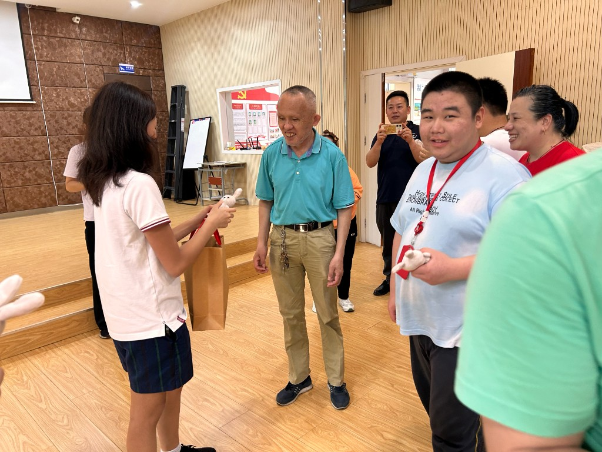
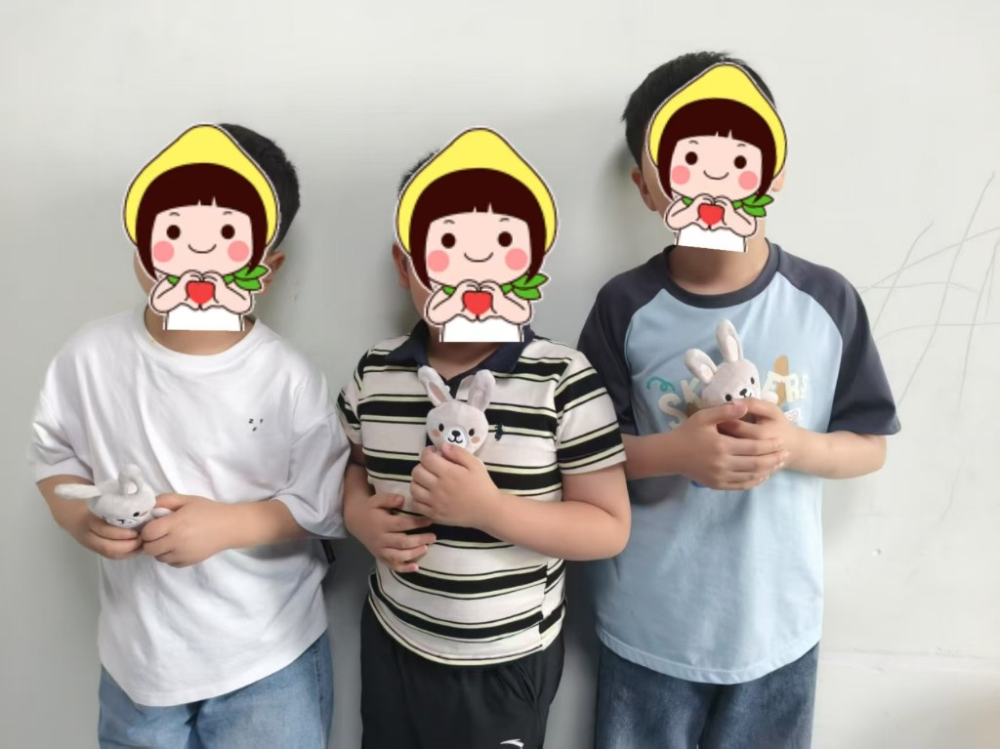
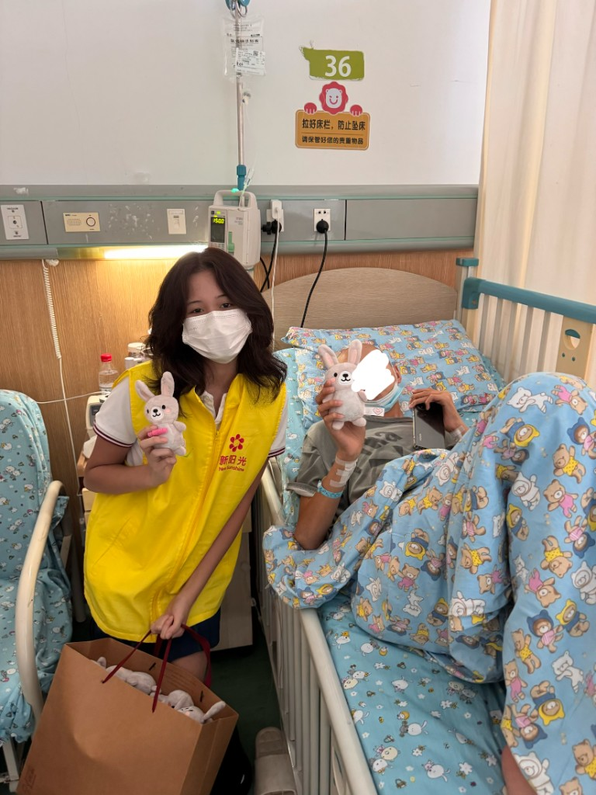
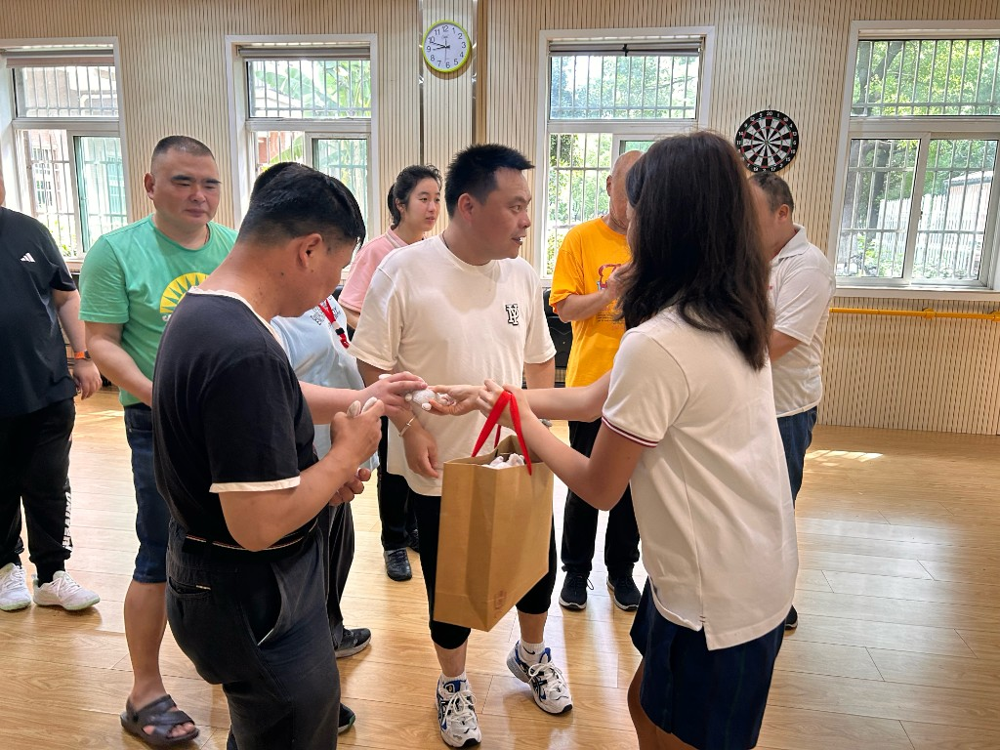

Calming sensory tools work best when inputs are gentle, predictable,
and customizable.
Partner effectiveness ratingsAverage scores out of 5Who benefited most
200+
Users reached across community partners
What designers learn from research
Soft, predictable sensory input—touch, gentle pressure, mild scent,
and simple fidget action—can help people feel safer and more
regulated in overwhelming environments.
Pastel colours
Softer colours, less visual noise
Muted colours and clear forms can lower visual load and support
calmer engagement for people with sensory differences.
De Silva, 2023; Norouzi et al., 2024
Soft texture
Pleasant touch that soothes
Soft, fur-like textures are often preferred in comfort objects and
can help filter out harsher sensory input.
Macdonald et al., 2024; MacLennan et al., 2021
Squishy fill
Hug, squeeze, ground
Squishable, compressible materials offer proprioceptive feedback
linked to grounding, safety, and reduced physical tension.
Park et al., 2020; Sahoo et al., 2025
Lavender scent
A mild calm cue
Gentle lavender scent is associated with relaxation and emotional
comfort—though scent should stay optional, since strong smells can
overwhelm some people.
Zhu et al., 2026
Fidget element
Hands busy, mind steadier
Fidget tools can support repetitive hand action and may reduce
anxiety most for sensory-seeking children.
Roche et al., 2023
The big idea
Gentle. Predictable. Customizable.
Across autism, ADHD, and broader neurodevelopmental groups, tactile
and emotionally resonant inputs repeatedly help with regulation—but
preferences vary, so choice matters.
Brandes-Aitken et al., 2024; Jurek et al., 2025; Bray et al., 2025
What partners told us
Organizations reported stress relief, better mood, calmer
behaviour, and more engagement in activities.
A rehabilitation centre said the toys could shorten negative
emotional episodes for some people with intellectual disabilities.





Important caveats
Everyone is different. No single feature works
for every sensory profile.
Customization. Over- and under-responsive
users often need different intensities.
Scent intensity. A balanced, mild scent can
support calm; too strong or too faint may reduce comfort.
Fidget evidence varies. Benefits appear
strongest for sensory seekers.
Our next step: keep the soft, calming design—and offer more choice
in texture, appearance, portability, and optional scent.
Selected sources
Brandes-Aitken, A., et al. (2024). Sensory processing subtypes relate
to distinct emotional and behavioral phenotypes…
Scientific Reports.
doi.org/10.1038/s41598-024-78573-2
De Silva, C. D. (2023). Sensory toys specified for early
interventions in autistic children…
IDR Integrated Design Research Conference.
doi.org/10.31705/idr.2023.3
MacLennan, K., et al. (2021). In our own words: The complex sensory
experiences of autistic adults.
Journal of Autism and Developmental Disorders.
doi.org/10.1007/s10803-021-05186-3
Zhu, J., et al. (2026). Portable hand exercise toys for the elderly
based on multisensory interaction.
The Journal of Interactive Social Sciences.
doi.org/10.64744/tjiss.2026.253